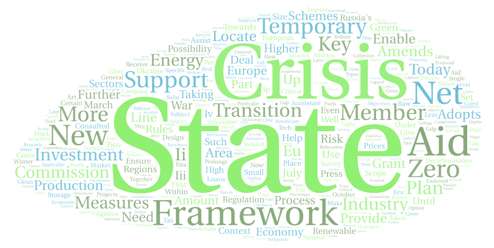

Projects
Changing the Calculus on Economic Security
After several decades of intensifying globalization, the world has entered a new phase centered around geoeconomic competition and economic security. Terms such as de-globalization, decoupling, and de-risking have entered public discourse and corporate reports, and increasingly shape policy interventions as governments vie to position themselves in a geopoliticizing world. An economic view centered around efficiency and factor endowment increasingly struggles to explain the security-based choices forced on firms and markets by states. From an efficiency-based point of view, replicating entire value chains within national borders is a form of economic downgrading. If so, why does this happen?
The core intuition behind the project is to place (real or imagined) security imperatives center stage. The aim of this project is to find out how such imperatives increasingly shape economic policy interventions, as well as corporate decision-making. We currently lack the theoretical and methodological toolkit to tackle such questions.
The project goes beyond the usual ‘supply-side’ bias in the literature, which has so far mostly analyzed policy documents and individual companies. I have collected an original data set of corporate earnings calls (n=12.825) that involves more than 4500 companies and spans eight years (starting in 2016). The large number of firms allows for a large-scale and nuanced analysis of how geoeconomic competition affects firms and sectors across time. In a first step, I aim to map theoretically and empirically what such an economic ‘calculus’ is, and how it is changing. In a follow-up paper, I want to analyze who are the winners and losers of geoeconomic competition.
European industrial policy
Why is industrial policy en vogue in the European Union? Given the EU’s market-making impetus, tilt towards fiscal austerity, and limits to subsidizing state aid, the turn to an active and targeted industrial policy in the last years is surprising. My dissertation documents this moment of After Market Making. I argue that a declining belief in open markets and economic efficiency as the sole propagators of ‘good’ economic outcomes has mobilized a coalition of firms, business associations, and trade unions to challenge the EU’s market-based governance regime. This is visible in EU trade policy, now understood in terms of open strategic autonomy, and especially visible in digital and high-tech fields and in the green transition, often discussed under the rubric of the ‘twin transitions’.
Post-PhD, I will focus on understanding how the demands for state intervention play out on the ground: can market-making institutions be repurposed for state intervention?
Governing by Exception

The EU’s Recovery and Resilience Fund, the flexibility around EU state aid and fiscal rules, as well as member state industrial policies have one thing in common: they extensively exploit treaty flexibility and exceptions, if not outright violating them. As governing by exception seems to be the only way forward in a highly politicized and institutionally rigid environment, it is key to understand both the drivers and consequences of this emerging regime governing EU economic policy.